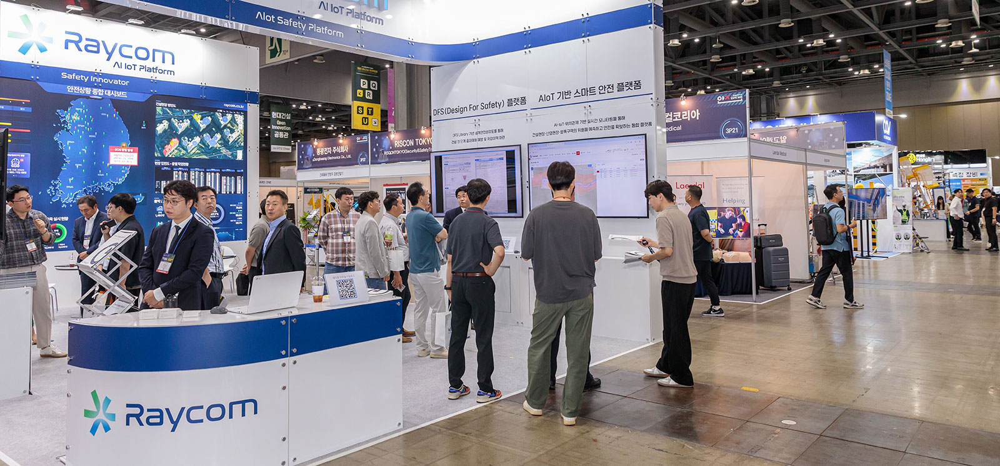
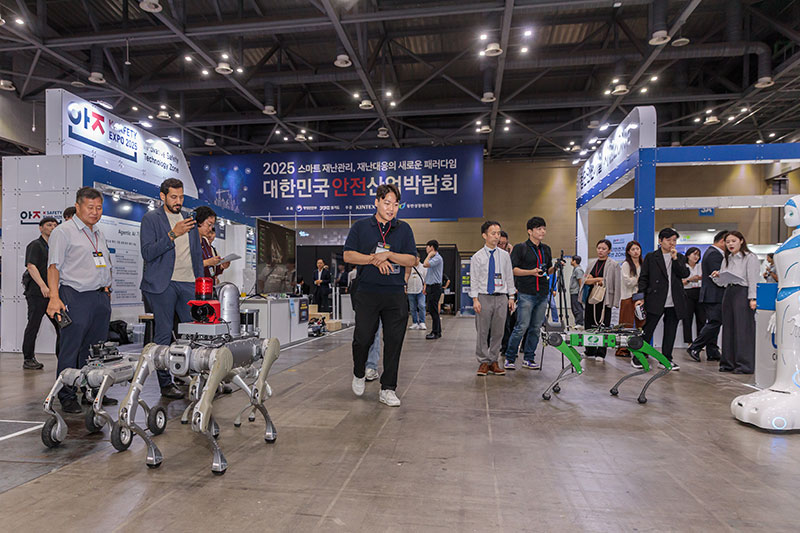
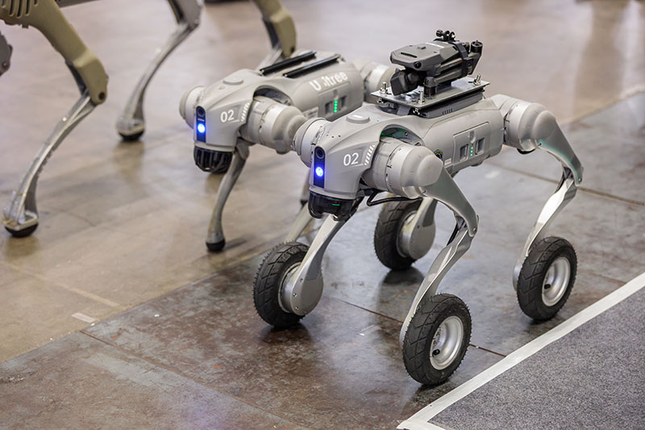
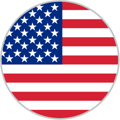
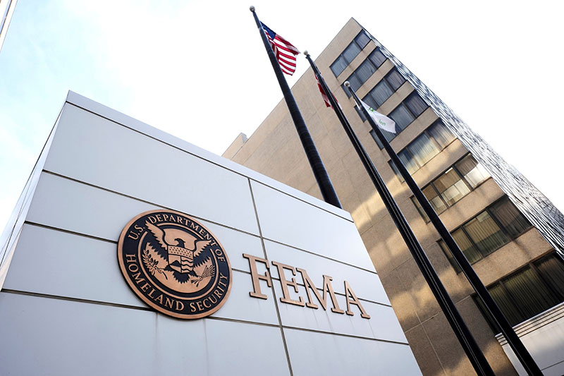
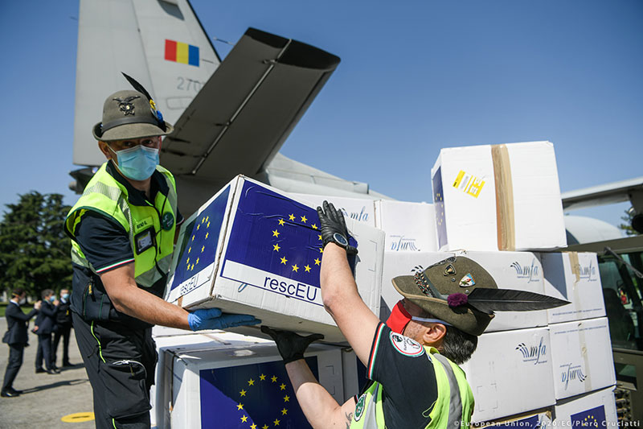
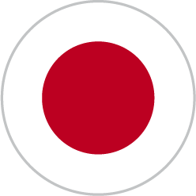
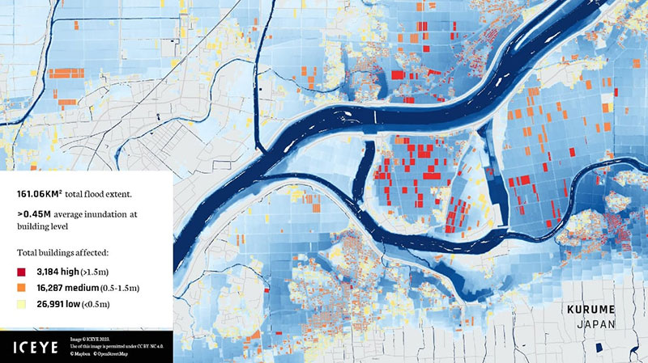

재난안전산업은 국민의 생명과 재산을 보호하는 공공성을 갖는 동시에 AI, 로봇, 드론, 센서, 데이터 기술이 융합되는 미래 성장산업이기도 하다. 이러한 흐름 속에서 우리 정부는 올해 처음으로 200억 원 규모의 ‘국민안전산업펀드’를 조성하며 재난안전기업에 대한 직접 투자에 나섰다. 재난안전산업을 하나의 독립 산업으로 규정하고, 이를 육성하기 위한 전용 투자펀드를 직접 조성했다는 점에서 주목된다. 눈을 좀 넓혀 해외 주요국에서 운영되는 관련 정책을 살펴보고 재난안전산업 육성이 갖는 의미를 되짚어 본다.



안전을 넘어 산업으로, 국민안전산업펀드
행정안전부와 경찰청이 공동으로 추진하는 국민안전산업펀드는 정부 출자금 100억 원과 민간·지방정부 출자금 100억 원을 매칭해 조성된다. 투자 대상은 AI, 로봇 등 첨단기술을 보유한 재난안전·치안 분야 유망기업으로 기술 고도화와 사업화, 해외시장 진출을 지원하는 것이 목적이다. 주목할 점은 한국이 재난안전산업을 하나의 독립 산업으로 규정하고, 이를 육성하기 위한 전용 투자펀드를 직접 조성했다는 점이다. 재난안전기업의 상당수가 중소기업 중심으로 구성돼 있고 공공시장 의존도가 높은 국내 산업 구조를 고려한 한국형 정책 모델이라는 평가를 받는다. 이 같은 방식은 해외 주요국과는 차별화된 지점이다. 미국과 유럽연합(EU)의 경우 재난안전산업을 국가안보, 기후위기 대응, 사회기반시설 개선의 일부로 접근하며 대규모 보조금을 통해 관련 산업을 육성하는 방식이다.

미국 연방재난관리청(FEMA) BRIC
‘보조금 지원 방식’
대표적인 사례가 미국 연방재난관리청(FEMA)의 BRIC(Building Resilient Infrastructure and Communities, 탄력적인 인프라 및 지역사회 구축) 프로그램이다. 이 프로그램은 정부 주도의 공공 인프라 확충이나 소방관 직접 지원에 특화된 보조금 지원 방식이다. 기업 등이 아닌 지방 정부가 BRIC 프로그램에 신청하면, 학교 안전 대피소 설치, 공공시설 강화, 홍수 지역 중요 시설 이전, 펌프장 보안 강화 등 재난 예방 및 위험 완화 프로젝트를 지원한다. 최근 사업 주기(2024~2025 회계연도)에는 약 10억 달러 규모의 예산이 투입돼 AI 기반 재난예측, 드론, 스마트 방재 인프라 등의 현장 적용을 지원하고 있다.

유럽연합(EU) UCPM
‘마중물 자금 지원’
유럽연합은 ‘재난 위험 관리’를 위한 자금 지원 중 UCPM(Union Civil Protection Mechanism, 연합 민방위 메커니즘)을 중심으로 재난 대응 역량을 강화하고 있다. UCPM은 EU회원국과 참여국들이 재난 발생 시 공동으로 신속하게 대응하기 위한 협력 체계다. 국민안전산업펀드가 안전 관련 전략적 인프라나 예방 사업에 마중물 역할을 하는 것처럼, 이 기금은 UCPM 회원국들의 재난 위험 관리 효과를 극대화하기 위한 전략적 활동과 투자 촉진을 지원한다. 다만, 미국과 마찬가지로 보조금 성격이 강해 재난 관리를 총괄하는 회원국 정부 기관이나 지자체가 신청 대상이다.


일본,
민간 보험 기업이 직접 투자
일본 정부가 재난안전 및 치안 분야의 기업에 직접 자금을 투자하고 육성하는 사례는 다양하다. 일본 정부(경제산업성, JETRO 등)가 주도하는 스타트업 육성 프로그램인 ‘J-스타트업’은 정부가 직접 지분 투자를 하거나 공공조달 우선권을 부여하는 방식이다. 하지만 특정 산업분야 투자가 아니라는 점에서 우리 정책과는 차이가 있다. 그 외 일본은 세계에서 민간 손해보험 시장이 가장 발달한 나라 중 하나로, 지진이나 태풍으로 인한 보험금 지급 리스크를 줄여야 하는 대형 손해보험 기업들이 직접 방재 스타트업에 투자하기도 한다.

다른 나라 유사 정책을 살펴보면 국민안전산업펀드는 한국형 산업 육성 전략을 상징적으로 보여주는 사례다. 재난안전산업은 공공시장 의존도가 높고 초기 실증과 사업화에 많은 비용이 소요된다. 특히 국내 재난안전기업 상당수가 중소기업인 현실을 고려하면, 국민안전산업펀드는 기술은 있지만 투자 유치가 어려웠던 기업에 중요한 성장 발판이 될 것으로 기대된다.
참고자료
- 미국 연방관리재난청(FEMA) BRIC(Building Resilient Infrastructure and Communities) 프로그램
https://www.fema.gov/grants/mitigation/learn/building-resilient-infrastructure-communities - EU 재난 위험 관리 기금 지원
https://civil-protection-knowledge-network.europa.eu/eu-funding-disaster-management - (일본 J-스타트업 관련) 정보통신산업진흥원 보고서
https://www.globalict.kr/kms_upload/2019/08/138331_1.pdf - (일본 민간 보험사 투자) 일본 최대 손보사인 도쿄해상(Tokio Marine) 투자
https://www.tokiomarinehd.com/en/purpose/materiality/resilience/